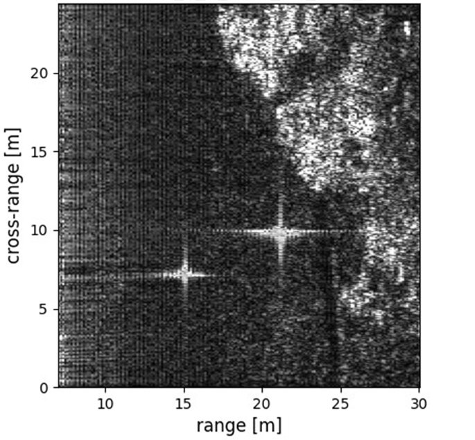

연구실적 · 국내전문학술지
실시간 SAR 영상 생성을 위한 Range Doppler Algorithm의 GPU 가속
GPU Acceleration of Range Doppler Algorithm for Real-Time SAR Image Generation

초록
In this paper, a GPU-accelerated kernel of range Doppler algorithm (RDA) was developed for real-time image formation based on frequency modulated continuous wave (FMCW) synthetic aperture radar (SAR). A pinned memory was used to minimize the data transfer time between the host and the GPU device, and the kernel was configured to perform all RDA operations on the GPU to minimize the number of data transfers. The dataset was obtained through the FMCW drone SAR experiment, and the GPU acceleration effect was measured in an intel i7-9700K CPU, 32GB RAM, and Nvidia RTX 3090 GPU environment. Including the data transfer time between host and devices, it was measured to be accelerated up to 3.41 times compared to the CPU, and when only the acceleration effect of operation was measured without including the data transfer time, it was confirmed that it could be accelerated up to 156 times.
본 논문에서는 FMCW(Frequency Modulated Continuous Wave) SAR(Synthetic Aperture Radar) 기반 실시간 영상 형성을 위해 RDA(Range Doppler Algorithm)의 GPU 가속 커널을 개발하였다. Host와 GPU device 사이의 데이터 전송 시간을 최소화하기 위해 pinned 메모리를 사용하였고, 데이터의 전송 횟수를 최소화하기 위해 모든 RDA 연산을 GPU에서 수행하도록 커널을 구성하였다. FMCW 드론 SAR 실험을 통해 데이터셋를 획득하였고, intel i7-9700K CPU, 32GB RAM과 Nvidia RTX 3090 GPU 환경에서 GPU의 가속 효과를 측정하였다. Host-device간 데이터 전송 시간을 포함했을 경우 CPU 대비 최대 3.41배 가속된 것으로 측정되었고, 데이터 전송 시간을 포함하지 않고 연산의 가속 효과만을 측정했을 때, 최대 156배 가속 가능함을 확인할 수 있었다.
사이트 원문 표기
Dong-Min Jeong (정동민), Woo-Kyung Lee (이우경), Myeong-Jin Lee (이명진), Yun-Ho Jung (정윤호), “실시간 SAR 영상 생성을 위한 Range Doppler Algorithm의 GPU 가속”, 전기전자학회논문지, 제27권 3호, 2023년
BibTeX
@article{10.7471/IKEEE.2023.27.3.265, author = {JeongDong-Min and LeeWoo-Kyung and LeeMyeong-Jin and JungYun-Ho}, title = {GPU Acceleration of Range Doppler Algorithm for Real-Time SAR Image Generation}, journal = {Journal of IKEEE}, publisher = {한국전기전자학회}, volume = {27}, number = {3}, pages = {265-272} year = 2023, month = 09
}